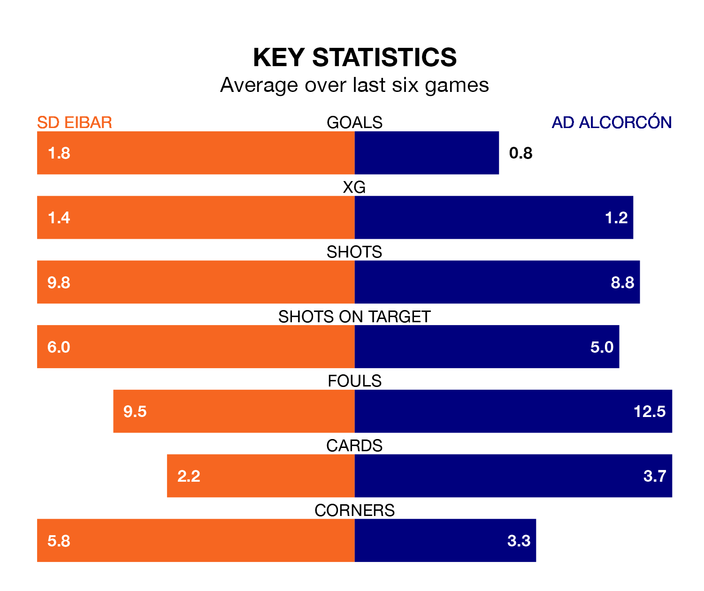

SD Eibar are heavy favourites to keep all three points at home in Sunday's kick-off against AD Alcorcón.
Eibar, who sit second in the Segunda División with 35 games played, are priced at 1.5 to seal victory at Estadio Municipal de Ipurúa.
Sitting 14 places and 18 points behind them in the table, Alcorcón are 6.1 to win with *Betting Company*, while the draw is at 3.7.
With 57 goals in 35 games so far this season, Eibar are the league's highest scorers with 1.6 goals per game. And they are conceding at an average rate, letting in 40 goals at a rate of 1.1 per game.
Alcorcón, meanwhile, are below average scorers, with 0.8 goals per game, compared to a league average of 1.1. They have conceded 1.3 goals per game.
In Jon Bautista Orgilles, the hosts have one of the league's most on-form strikers so far this season. He has notched 14 goals in 30 appearances, to sit third in the scoring charts.
The away side's top scorers, with five goals each, are Dyego Sousa and Jacobo González Rodrigañez.
In the last three years, Eibar and Alcorcón have played each other on three occasions. Eibar won one of them and Alcorcón the other.
Their last meeting was on December 17, when Alcorcón won 1-0 at home.
Eibar are in mixed form in the Segunda División, with three wins and three losses from their last six games.
With three wins and two draws over that period, Alcorcón's form is slightly better – they have taken 11 points from 18, compared to Eibar's nine.
Eibar's last match was on April 14, a 2-0 win against FC Andorra, with Bautista Orgilles getting the goals for Eibar.
Alcorcón beat Villarreal B 1-0 last time out, on Monday, with Christian Borrego Isabel on the scoresheet.
Updated: 15:40 (UTC), 18/04/24